산림기사 (2022-04-24 기출문제)
1과목: 조림학
1. 순림과 혼효림에 대한 설명으로 옳지 않은 것은?
- 순림은 산림작업과 경영이 간편하고 경제적으로 수행될 수 있다.
- 순림은 혼효림보다 유기물의 분해가 더 빨라져 무기양료의 순환이 더 잘 된다.
- 혼효림은 인공적으로 조성하기에는 기술적으로 복잡하고 보호관리에 많은 경비가 소요된다.
- 혼효림은 심근성과 천근성 수종이혼생할 때 바람 저항성이 증가하고 토양단면 공간이용이 효과적이다.
(정답률: 83%)

2. 곰솔에 대한 설명으로 옳지 않은 것은?
- 수피는 흑갈색이다.
- 소나무와 수종이다.
- 겨울눈은 붉은색이다.
- 해안 지역에 주로 분포한다.
(정답률: 81%)
3. 덩굴제거 방법으로 옳지 않은 것은?
- 덩굴의 줄기를 제거하거나 뿌리를 굴취한다.
- 디캄바 액제는 비선택성 제초제로 일반적인 덩굴에 적용한다.
- 주로 칡, 다래, 머루 같은 덩굴류가 무성한 지역을 대상으로 한다.
- 글라신 액제를 이용한 덩굴 제거에서는 도포보다는 주로 주입 방법을 이용한다.
(정답률: 60%)
4. 밤, 도토리 등 함수량이 많은 전분 종자를 추운 겨울 동안 동결하지 않고 부패하지 않도록 저장하는 방법으로 가장 적합한 것은?
- 노천매장법
- 보호저장법
- 상온저장법
- 저오저장법
(정답률: 67%)
5. 작업종을 분류하는 기준으로 가장 거리가 먼 것은? (단, 대나무는 제외)
- 벌채 종류
- 벌구 크기
- 벌채 위치
- 벌구 모양
(정답률: 57%)
6. 산림 토양에서 부식에 대한 설명으로 옳지 않은 것은?
- 토양의 입단구조를 형성하게 한다.
- 임상 내 H층에 해당되며 유기물이 많이 함유되어 있다.
- 토양 미생물의 생육에 필요한 영양분으로 사용 가능하다.
- 칼슘, 마그네슘, 칼륨 등 염기를 흡착하는 능력인 염기치환용량이 작다.
(정답률: 71%)
7. 묘목의 굴취를 용이하게 하고 묘목의 생장을 조절하기 위해 실시하는 작업은?
- 심경
- 관수
- 단근
- 철선감기
(정답률: 81%)
8. 음수 갱신에 가장 불리한 작업 방법은?
- 산벌작업
- 택벌작업
- 이단림작업
- 모수림작업
(정답률: 68%)
9. 비료의 당도가 너무 높아 묘목이 말라죽는 경우에 토양과 묘목의 수분포텐셜(
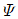
)의 관계로 옳은 것은?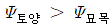
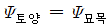
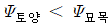
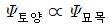
(정답률: 63%)
10. 우량한 침엽수 묘목에 대한 설명으로 옳지 않은 것은?
- 측아가 정아보다 우세하다.
- 왕성한 수세를 지니며 조직이 단단하다.
- 균근이나 공생미생물이 충분히 부착되어 있다.
- 근계가 충실하며 뿌리가 사방으로 균형있게 발달한다.
(정답률: 88%)
11. 임목 종자에 대한 설명으로 옳지 않은 것은?
- 리기다소나무 종자의 산지는 미국의 동부지역이다.
- 상수리나무 종자는 보습 저장하여 활력을 유지시킨다.
- 발아율이 80%이고, 순량율이 70%인 종자의 효율은 56%이다.
- 박태기나무, 아까시나무 종자 탈종에 가장 적합한 방법은 부숙마찰법이다.
(정답률: 71%)
12. 수목에 필요한 무기영양원으로 필수 원소가 아닌 것은?
- 철
- 질소
- 망간
- 알루미늄
(정답률: 72%)
13. 파종 후 발아 과정에서 해가림이 필요한 수종은?
- Zelkova serrata
- Picea jezoensis
- Robinia pseudoacacia
- Fraxinus rhynchophylla
(정답률: 55%)
14. 식재 밀도에 따른 임목의 형질과 생산량에 대한 설명으로 옳은 것은? (단, 수종과 연령 및 입지는 동일함)
- 고밀도일수록 연륜폭은 좁아진다.
- 고밀도일수록 지하고는 낮아진다.
- 고밀도일수록 단목의 평균 간재적은 커진다.
- 임목밀도에 따라 상층목의 평균수고가 달라진다.
(정답률: 62%)
15. 광합성 색소인 카로테노이드(carotenoids)에 대한 설명으로 옳지 않은 것은?
- 노란색, 오렌지색, 빨간색 등을 나타내는 색소이다.
- 광도가 높을 경우 광산화작용에 의한 엽록소의 파괴를 방지한다.
- 수목 내에 있는 색소 중에서 광질에 반응을 나타내며 광주기 현상과 관련된다.
- 엽록소를 보조하여 햇빛을 흡수함으로써 광합성 시 보조색소 역할을 담당한다.
(정답률: 53%)
16. 왜림작업으로 갱신하기 가장 부적합한 수종은?
- 잣나무
- 오리나무
- 신갈나무
- 물푸레나무
(정답률: 74%)
17. 참나무류 줄기에서 수액상승 속도가 다른 수종에 비해 빠른 이유는?
- 뿌리가 심근성이기 때문이다.
- 도관의 지름이 크기 때문이다.
- 심재가 잘 형성되기 때문이다.
- 잎의 앞면과 뒷면에 모두 기공이 있기 때문이다.
(정답률: 76%)
18. 어린나무가꾸기 작업에 대한 설명으로 옳은 것은?
- 주로 6월~9월에 실시하는 것이 좋다.
- 숲가꾸기 과정에서 한 번만 실시한다.
- 간벌 이후에 불량목을 제거하기 위해 실시한다.
- 산림경영 과정에서 중간 수입을 위해서 실시한다.
(정답률: 78%)
19. 종자가 성숙하고 산포하는 시기가 개화 당년 봄철인 수종은?
- Populus nigra
- Taxus cuspidata
- Torreya nucifera
- Machilus thunbergii
(정답률: 52%)
20. 수목이 외부 환경으로부터 받은 스트레스를 감지하는 역할을 수행하는 호르몬은?
- 옥신
- 지베렐린
- 사이토키닌
- 에브시스산
(정답률: 59%)
2과목: 산림보호학
21. 액상의 농약을 제조할 때 주제를 녹이기 위하여 사용하는 물질은?
- 유제
- 용제
- 유화제
- 증량제
(정답률: 50%)
22. 흡즙성 해충에 해당하는 것은?
- 소나무좀
- 알락하늘소
- 버즘나무방패벌레
- 꼬마버들재주나방
(정답률: 50%)
23. 지표를 배회하는 성질의 해충을 채집하는 방법으로 가장 효과적인 도구는?
- 유아등(light trap)
- 함정트랩(pitfall trap)
- 수반트랩(water trap)
- 말레이즈트랩(malaise trap)
(정답률: 42%)
24. 여름포자가 없는 녹병은?
- 향나무 녹병
- 잣나무 털녹병
- 소나무 잎녹병
- 전나무 잎녹병
(정답률: 55%)
25. 다음 설명에 해당하는 해충은?
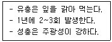
- 대벌레
- 박쥐나방
- 미국흰불나방
- 조록나무흑진딧물
(정답률: 57%)
26. 다음 중 2차 대기오염 물질에 해당되는 것은?
- HF
- SO2
- 분진
- PAN
(정답률: 48%)
27. 밤나무 줄기마름병을 방제하는 방법으로 옳지 않은 것은?
- 내병성 품종을 식재한다.
- 동해 및 볕데기를 막고 상처가 나지 않게 한다.
- 질소질 비료를 많이 주어 수목을 건강하게 한다.
- 천공성 해충류의 피해가 없도록 살충제를 살포한다.
(정답률: 59%)
28. 밤나무혹벌에 대한 설명으로 옳은 것은?
- 연 1회 발생하며 유충으로 월동한다.
- 피해를 받은 나무가 고사하는 경우는 없다.
- 충영은 성충 탈출 후에도 녹색을 유지한다.
- 밤나무 잎에 기생하여 직경 1mm 내외의 충영을 만든다.
(정답률: 40%)
29. 수목의 그을음병을 방제하는데 가장 적합한 방법은?
- 중간기주를 제거한다.
- 방풍 시설을 설치한다.
- 해가림 시설을 설치한다.
- 흡즙성 곤충을 방제한다.
(정답률: 53%)
30. 주로 토양에서 월동하는 병원균은?
- 모잘록병균
- 잣나무 털녹병균
- 낙엽송 잎떨림병균
- 배나무 불마름병균
(정답률: 63%)
31. 버즘나무방패벌레가 월동하는 형태는?
- 알
- 성충
- 유충
- 번데기
(정답률: 32%)
32. 상륜에 대한 설명으로 옳은 것은?
- 조상으로 인하여 나타난다.
- 만상으로 수목의 생장이 저해되어 나타난다.
- 한경울 수목의 휴면 기간 중 저온으로 인하여 치수에 발생하는 피해 현상이다.
- 주로 추운 지방에서 고립목이나 임연부의 교목에서 주로 발생하는 상렬의 일종이다.
(정답률: 46%)
33. 산성비로 인한 피해 현상으로 옳지 않은 것은?
- 토양 중 알루미늄 및 망간 등의 중금속을 불용화시킨다.
- 토양이 산성화되어 수목에 대한 양료 공급이 부족해진다.
- 수목 잎의 조직 내 책상조직에 피해를 주어 세포질을 손상시킨다.
- 수목 잎의 기공과 큐티클을 통하여 침투한 산성 물질이 내부 세포의 생리 작용에 장해를 준다.
(정답률: 39%)
34. 털두꺼비하늘소에 대한 설명으로 옳지 않은 것은?
- 피해목에서는 톱밥에 배출되지 않기 때문에 식별이 어렵다.
- 버섯재배용 원목을 가해하여 버섯재배에 피해를 주기도 한다.
- 벌채목에 방충망을 씌워 성충의 산란을 막아 방제할 수 있다.
- 주로 1년에 1회 발생하나 2년에 1회 발생하는 경우도 있다.
(정답률: 56%)
35. 곤충의 소화기관 중 잎에서 가까운 것부터 올바르게 나열한 것은?
- 전위 → 인두 → 전소장 → 위맹낭
- 인두 → 전위 → 위맹낭 → 전소장
- 전위 → 인두 → 위맹낭 → 전소장
- 인두 → 전위 → 전소장 → 위맹낭
(정답률: 42%)
36. 아까시잎혹파리에 대한 설명으로 옳지 않은 것은?
- 아까시나무만 가해한다.
- 원산지는 북아메리카이다.
- 땅속에서 성충으로 월동한다.
- 흰가루병 및 그을음병을 동반한다.
(정답률: 41%)
37. 모잘록병을 방제하는 방법으로 옳지 않은 것은?
- 밀식하여 관리한다.
- 토양 소독을 실시한다.
- 배수와 통풍을 잘하여 준다.
- 복토를 두껍게 하지 않는다.
(정답률: 56%)
38. 소나무 재선충병이 발생하는 주요 경로는?
- 종자
- 토양
- 매개충
- 중간기주
(정답률: 59%)
39. 대추나무 빗자루병 방제 약제로 가장 적합한 것은?
- 베노밀 수화제
- 아진포스메틸 수화제
- 스트렙토마이신 수화제
- 옥시테트라사이클린 수화제
(정답률: 57%)
40. 침엽수, 활엽수, 초본식물을 모두 기주로 하는 수목병은?
- 흰가루병
- 갈색고약병
- 리지나뿌리썩음병
- 아밀라리아뿌리썩음병
(정답률: 40%)
3과목: 임업경영학
41. 산림경영계획에서 임종 구분으로 옳은 것은?
- 임반, 소반
- 천연림, 인공림
- 입목지, 무립목지
- 침엽수림, 활엽수림, 혼효림
(정답률: 50%)
42. 다음 조건에서 정액법에 의한 임업기계의 연간 감가상각비는?
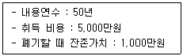
- 50만원
- 80만원
- 100만원
- 160만원
(정답률: 53%)
43. 현재의 가치가 10,000원인 임목을 이자율 4%로 4년 동안 임지에 존치하였다면 4년 동안의 임목가치 증가액은?
- 약 1,700원
- 약 2,700원
- 약 10,000원
- 약 11,700원
(정답률: 30%)
44. 국유림 경영의 목표에서 다섯 가지 주목표에 해당되지 않는 것은?
- 보호기능
- 고용기능
- 경영수지 개선
- 국제협력 강화
(정답률: 54%)
45. 평균생장량과 연년생장량간의 관계에 대한 설명으로 옳은 것은?
- 초기에는 평균생장량이 연년생장량보다 크다.
- 평균생장량이 연년생장량에 비해 최대점에 빨리 도달한다.
- 평균생장량이 최대일 때 연년생장량과 평균생장량은 같게 된다.
- 평균생장량이 최대점에 이르기까지는 연년생장량이 평균생장량보다 항상 작다.
(정답률: 54%)
46. 자본장비도에 대한 설명으로 옳은 것은?
- 노동생산성은 자본장비도와 자본효율에 의해 결정된다.
- 다른 요소에 변화가 없다고 할 때 자본이 많아지면 자본효율은 커진다.
- 자본액 중에서 유동자본을 포함한 고정자본을 종사자로 나눈 것이다.
- 다른 요소에 변화가 없다고 할 때, 자본이 많아지면 자본장비도는 작아진다.
(정답률: 22%)
47. 유동자본으로만 올바르게 짝지은 것은?
- 임도, 임업기계
- 묘목, 임업기계
- 임도, 미처분 임산물
- 묘목, 미처분 임산물
(정답률: 53%)
48. 임업조수익의 구성요소에 해당하는 것은?
- 감가상각액
- 임업현금지출
- 미처분 임산물 증감액
- 농업생산자재 재고 증감액
(정답률: 52%)
49. 다음 조건에 따른 시장가역산법에 의한 소나무 원목의 임목가는?
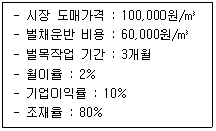
- 약 210원/m3
- 약 2,100원/m3
- 약 20,970원/m3
- 약 209,660원/m3
(정답률: 41%)
50. 임지기망가의 크기에 영향을 주는 인자에 대한 설명으로 옳지 않은 것은?
- 이율이 높으면 높을수록 임지기망기는 커진다.
- 조림비와 관리비의 값은 (-)이므로 이 값이 클수록 임지기망가는 작아진다.
- 주벌수익과 간벌수익은 값은 (+)이므로 이 값이 클수록 임지기망가는 커진다.
- 벌기령이 높아지면 임지기망가는 처음에는 증가하다가 어느 시기에 최대에 도달하고, 그 후부터는 점차 감소한다.
(정답률: 45%)
51. 산림수확 조절방법 중 면적평분법을 적용할 수 없는 작업종은?
- 복벌
- 재벌
- 개벌
- 택벌
(정답률: 48%)
52. 다음 설명에 해당하는 평가 방법은?
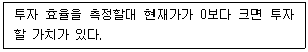
- 회수기간법
- 순현재가치법
- 수익비용률법
- 투자이익률법
(정답률: 38%)
53. 산림경영의 지도원칙 중에서 수익성의 원칙에 대한 설명으로 옳은 것은?
- 토지의 생산력을 최대로 추구하는 원칙
- 최대의 경제성을 올리도록 경영하는 원칙
- 최소의 비용으로 최대의 효과를 발휘하는 원칙
- 최대의 이익 또는 이윤을 얻을 수 있도록 경영하는 원칙
(정답률: 46%)
54. 산림경영계획에서 1-2-3-4로 표시된 산림구획이 의미하는 것은?
- 임반-보조임반-소반-보조소반
- 임반-소반-보조임반-보조소반
- 경영계획구-임반-소반-보조소반
- 경영계획구-임반-보조임반-소반
(정답률: 52%)
55. 형수를 사용해서 입목의 재적을 구하는 방법을 형수법이라고 하는데, 비교 원주의 직경 위치를 최하단부에 정해서 구한 형수는?
- 정형수
- 단목형수
- 흉고형수
- 절대형수
(정답률: 48%)
56. 수간석해를 이용하여 전체 재적을 구할 때 합산하지 않아도 되는 것은?
- 근주재적
- 지조재적
- 결정간재적
- 초단부재적
(정답률: 39%)
57. 다음에 주어진 법정림 수확표를 이용하여 계산한 법정생장량은? (단, 산림면적은 300ha, 윤벌기는 60년)
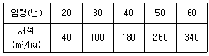
- 184m3
- 920m3
- 1,700m3
- 17,000m3
(정답률: 42%)
58. 임지의 지위지수를 결정하는 방법에 대한 설명으로 옳은 것은?
- 기준 임령에서 임분의 전체 축적으로 결정한다.
- 기준 임령에서 임분의 우세목 수고로 결정한다.
- 기준 임령에서 임분의 우세목 재적으로 결정한다.
- 기준 임령에서 임분을 구성하는 우세목과 열세목의 평균직경으로 결정한다.
(정답률: 48%)
59. 유령림의 임목을 평가하는 방법으로 가장 적합한 것은?
- 비용가법
- 매매가법
- 기망가법
- Glaser 법
(정답률: 48%)
60. 임목의 흉고직경을 계산하는 방버으로 산술평균직경법(a)과 흉고단면적법(b)의 관계에 대한 설명으로 옳은 것은?
- a와 b는 같은 값이 된다.
- a가 b보다 큰 값이 된다.
- b가 a보다 큰 값이 된다.
- a와 b 사이에는 일정한 관계가 없다.
(정답률: 45%)
4과목: 임도공학
61. 절토 경사면이 경암인 경우의 기울기 기준으로 옳은 것은?
- 1 : 0.3 ~ 0.8
- 1 : 0.5 ~ 0.8
- 1 : 0.5 ~ 1.5
- 1 : 0.8 ~ 1.5
(정답률: 47%)
62. 개발지수에 대한 설명으로 옳지 않은 것은?
- 노망의 배치상태에 따라서 이용효율성은 크게 달라진다.
- 개발지수 산출식은 평균집재거리와 임도밀도를 곱한 값이다.
- 임도가 이상적으로 배치되었을 때는 개발지수가 10에 근접한다.
- 임도망이 어느 정도 이상적인 배치를 하고 있는가를 평가하는 지수이다.
(정답률: 40%)
63. 지반고가 시점 10m, 종점 50m이고 수평거리가 1km일 때 종단기울기는?
- 4%
- 5%
- 6%
- 7%
(정답률: 42%)
64. 다음 조건에서 곡선반지름(m)은?
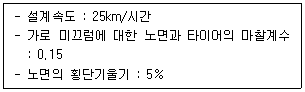
- 약 15
- 약 25
- 약 30
- 약 50
(정답률: 35%)
65. 굴삭기의 시간당 작업량 산출 계산을 위한 인자로 거리가 먼 것은?
- 작업효율
- 버킷계수
- 체적계수
- 버킷면적
(정답률: 42%)
66. 수준측량 결과가 다음과 같을대 종점의 지반고는?
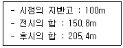
- 45.4m
- 54.6m
- 154.6m
- 456.2m
(정답률: 51%)
67. 임도의 종단면도에 대한 설명으로 옳지 않은 것은?
- 축척은 횡 1/1,000, 종 1/200로 작성한다.
- 종단면도는 전후도면이 접합되도록 한다.
- 종단기울기의 변화점에는 종단곡선을 삽입한다.
- 종단기입의 순서는 좌측 하단에서 상단방향으로 한다.
(정답률: 33%)
68. 임도 측선의 거리가 99.16m 이고 방위가 S 39° 15′ 25″ W 일 때 위거와 경거의 값으로 옳은 것은?
- 위도 +76.78m, 경거 +62.75m
- 위도 +76.78m, 경거 -62.75m
- 위도 -76.78m, 경거 +62.75m
- 위도 -76.78m, 경거 -62.75m
(정답률: 29%)
69. 머캐덤도에 대한 설명으로 옳지 않은 것은?
- 시멘트 머캐덤도 : 쇄석을 시멘트로 결합시킨 도로
- 역청 머캐덤도 : 쇄석을 타르나 아스팔트로 결합시킨 도로
- 교통체 머캐덤도 : 쇄석이 교통과 강우로 인하여 다져진 도로
- 수체 머캐덤도 : 쇄석의 틈 사이에 모래 및 마사를 침투시켜 롤러로 다져진 도로
(정답률: 50%)
70. 임도의 횡단기울기에 대한 설명으로 옳지 않은 것은?
- 노면 배수를 위해 적용한다.
- 차량의 원심력을 크게 하기 위해 적용한다.
- 포장이 된 노면에서는 1.5~2%를 기준으로 한다.
- 포장이 안 된 노면에서는 3~5%를 기준으로 한다.
(정답률: 53%)
71. 적정임도밀도가 10m/ha이고 집재방향이 양방향일 때 평균집재거리는? (단, 우회계수는 고려하지 않음)
- 10m
- 100m
- 250m
- 500m
(정답률: 47%)
72. 임도 측량 방법으로 영선에 대한 설명으로 옳지 않은 것은?
- 노폭의 1/2 되는 점을 연결한 선이다.
- 절토작업과 성토작업의 경계선이 되기도 한다.
- 산지 경사면과 임도 노면의 시공면과 만나는 점을 연결한 노선의 종축이다.
- 영선측량의 경우 종단측량을 먼저 실시하여 영선을 정한 후에 평면 및 횡단측량을 한다.
(정답률: 42%)
73. 원목 집재 및 운재용 장비로 가장 적합한 것은?
- 포워더
- 트리펠러
- 프로세서
- 하베스터
(정답률: 48%)
74. 간선임도의 구조에 대한 설명으로 옳지 않은 것은?
- 차돌림 곳은 너비를 10m 이상으로 한다.
- 임도의 유효너비는 3m를 기준으로 한다.
- 대피소의 유효길이는 15m 이상으로 한다.
- 설계속도 20km/시간일 때 최소곡선반지름은 일반지형의 경우 12m 이상으로 한다.
(정답률: 46%)
75. 지형도의 등고선에 대한 설명으로 옳지 않은 것은?
- 조곡선은 간곡선의 1/2의 거리로 불규칙한 지형을 나타낼 때 사용한다.
- 간곡선은 산지의 형태를 표시하며 주곡선 5개마다 1개를 굵게 표시한다.
- 주곡선은 가는 실선으로 그리며 지형을 나타내는 기본이 되는 곡선이다.
- 등고선의 간격은 서로 옆에 있는 등고선 사이의 수직거리를 말하며 평면도의 축척과 같은 의미를 가진다.
(정답률: 32%)
76. 와이어로프의 안전계수가 4이고 절단하중이 360kg 이라면 이 와이어로프의 최대 장력은?
- 60kg
- 90kg
- 120kg
- 180kg
(정답률: 50%)
77. 임도를 설계하고자 할 때 다음 중 가장 먼저 해야 할 업무는?
- 예측
- 답사
- 예비조사
- 설계도서 작성
(정답률: 48%)
78. 임도의 노체 구성 순서로 옳은 것은? (단, 아래에서 위로의 순서에 해당됨)
- 노반→기층→노상→표층
- 노상→노반→기층→표층
- 노반→노상→기층→표층
- 노상→기층→노반→표층
(정답률: 46%)
79. 임도망 계획 시 고려할 사항으로 옳은 것을 모두 고른 것은?
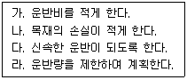
- 가, 나, 다
- 가, 나, 라
- 가, 다, 라
- 가, 나, 다, 라
(정답률: 56%)
80. 작업임도에서 차량규격으로 2.5톤 트럭의 최소회전반경(m) 기준은?
- 5.0
- 6.0
- 7.0
- 12.0
(정답률: 31%)
5과목: 사방공학
81. 수제에 대한 설명으로 옳지 않은 것은?
- 계안으로부터 유심을 향해 돌출한 공작물을 말한다.
- 계상 폭이 좁고 계상 기울기가 급한 황폐 계류에 적용한다.
- 수제의 높이는 최고수위로 하고 끝부분을 다소 낮게 설치한다.
- 상향수제는 수제 사이의 토사 퇴적이 하향수제보다 많고, 수제 앞부분에서의 세굴이 강하다.
(정답률: 37%)
82. 야계사방의 주요 목적으로 옳지 않은 것은?
- 유송토사 억제 및 조정
- 산각의 고정과 산복의 붕괴방지
- 계상 기울기를 완화하여 계류의 침식 방지
- 계류의 수질 정화와 산림 황폐지로 인한 재해 방지
(정답률: 41%)
83. 정사울타리를 설치할 때 기준 높이로 옳은 것은?
- 0.5~0.7m
- 1.0~1.2m
- 2.0~2.2m
- 2.5~2.7m
(정답률: 48%)
84. 기슭막이의 시공목적에 대한 설명으로 옳지 않은 것은?
- 기슭의 유로 변경
- 계안의 횡침식 방지
- 산각의 안정성 도모
- 산지 사방공작물의 기초 보호
(정답률: 44%)
85. 다음 설명에 해당하는 것은?
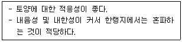
- 큰조아재비(timithy)
- 오리새(orchard grass)
- 우산잔디(bermuda grass)
- 능수귀염풀(weeping love grass)
(정답률: 42%)
86. 선떼붙이기 공법에서 1등급 증가할 때마다 연장 1m 당 떼의 사용매수는 얼마씩 차이가 나는가? (단, 떼의 크기는 길이 40cm, 나비는 25cm)
- 1.25매씩 감소
- 1.25매씩 증가
- 2.50매씩 감소
- 2.50매씩 증가
(정답률: 36%)
87. 비탈면에 설치하는 소단의 효과가 아닌 것은?
- 시공비를 절약할 수 있다.
- 비탈면의 안정성을 높인다.
- 유지보수작업 시 작업원의 발판으로 이용할 수 있다.
- 유수로 인하여 비탈면에서 발생하는 침식의 진행을 방지한다.
(정답률: 50%)
88. 돌쌓기 배치 방법으로 잘못된 쌓기가 아닌 것은?
- 포갠돌
- 이마대기
- 여섯에움
- 새입붙이기
(정답률: 44%)
89. 다음 ( ) 안에 가장 적합한 수치는?
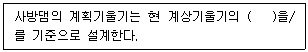
- 1/2 ~ 2/3
- 1/2 ~ 1
- 2/3 ~ 1
- 2/3 ~ 3/2
(정답률: 40%)
90. 계류의 바닥 폭이 3.8m, 양안의 경사각이 모두 45°이고, 높이가 1.2m일 때의 계류 횡단면적(m2)은?
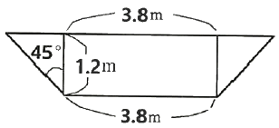
- 0.5
- 0.6
- 5.3
- 6.0
(정답률: 40%)
91. 유역면적이 10ha이고 최대시우량이 150mm/hr 일 때 임상이 좋은 산림지역의 최대홍수유량은? (단, 유거계수는 0.35)
- 약 0.14 m3/sec
- 약 1.46 m3/sec
- 약 14.58 m3/sec
- 약 145.83 m3/sec
(정답률: 41%)
92. 중력식 콘크리트 사방댐의 구조에 포함되지 않는 것은?
- 물받이
- 방수로
- 밑막이
- 댐둑어깨
(정답률: 46%)
93. 산지사방에서 비탈다듬기 공사를 하기 전에 시공하는 것이 효과적인 공사는?
- 단끊기
- 떼단쌓기
- 땅속흙막이
- 퇴사울세우기
(정답률: 45%)
94. 골막이에 대한 설명으로 옳지 않은 것은?
- 토사퇴적 기능은 없다.
- 사방댐보다 규모가 작다.
- 계류의 상류부에 설치한다.
- 반수면은 토사를 채우고 대수면은 떼를 입힌다.
(정답률: 35%)
95. 다음 설명에 해당하는 것은?
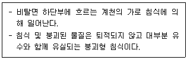
- 산붕
- 붕락
- 포락
- 산사태
(정답률: 44%)
96. 산사태와 비교한 땅밀림에 대한 설명으로 옳지 않은 것은?
- 이동 속도가 빠르다.
- 지하수의 영향이 크다.
- 완경사면에서 주로 발생한다.
- 주로 점성토가 미끄럼면으로 활동한다.
(정답률: 57%)
97. 사방댐 설치에 있어 홍수기울기와 평형기울기 사이의 퇴사량을 무엇이라 하는가?
- 토사퇴적량
- 토사안정량
- 토사침식량
- 토사조절량
(정답률: 26%)
98. 시멘트에 대한 설명으로 옳지 않은 것은?
- 조기에 강도를 내기 위하여 염화칼슘을 쓰기도 한다.
- 시멘트를 제조할 때 석고를 넣으면 급결성이 된다.
- 시멘트는 분말도가 너무 높으면 내구성이 약해지기 쉬우므로 주의해야 한다.
- 일반적으로 포틀랜드시멘트는 수경성이고 강도가 크며 비중은 대체로 30.5~3.15 정도이다.
(정답률: 37%)
99. 돌골막이 공법에서 돌쌓기의 표준 기울기로 옳은 것은?
- 1 : 0.1
- 1 : 0.2
- 1 : 0.3
- 1 : 0.4
(정답률: 46%)
100. 강우에 의한 산지침식의 발달과정 순서로 옳은 것은?
- 구곡침식→면상침식→누구침식
- 구곡침식→누구침식→면상침식
- 면상침식→구곡침식→누구침식
- 면상침식→누구침식→구곡침식
(정답률: 50%)